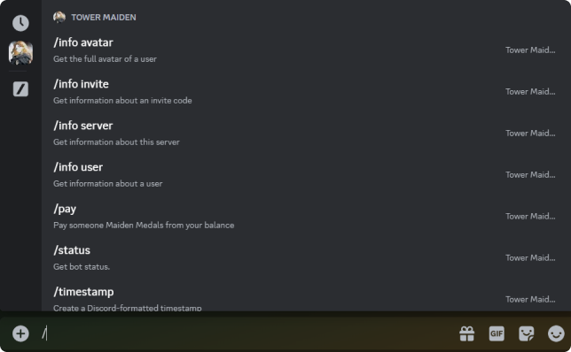
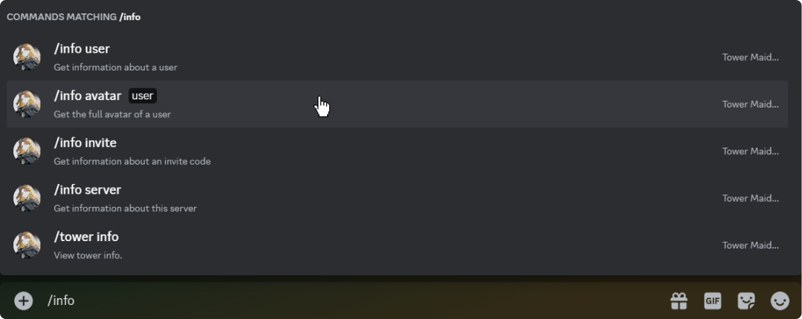
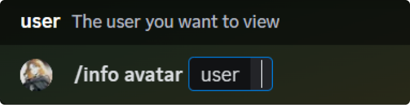
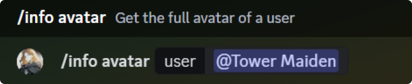
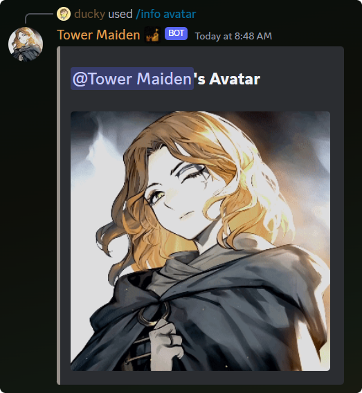

Slash commands are the main entrypoint for bots on Discord. They allow you to do lots of really cool things, but it all starts with the slash command!
How to use a Slash Command
Slash commands can be used in a few simple steps. Below you will learn how to send a slash command
To use a slash command, navigate to the chat box (where you type your messages) and type the / key. The screen should populate with every command that is available to you. Choose the command you'd like to use or type to search for a specific command.

Command Selection Menu: Press /
Once you find the command you'd like to run, select it, and it will populate your chat box with the required arguments for your command.

Click or tap the command to run
Slash Command Breakdown - Supplying Arguments
Some commands have required and optional options to include when you run the command. These arguments make themselves known when you enter a command.

All required arguments automatically populate when you select a command
Fill out each argument as needed, then press send to run the command

Once each argument is filled out, you're good to go! Press send and watch the magic happen.
Once the command processes, Tower Maiden should respond to you in the same channel you ran the command in.

Tower Maiden will send her repsonse in the same channel that you're in